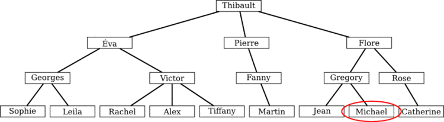

Grand-père Castor a saisi son arbre généalogique sur son ordinateur. Dans cet arbre, les enfants de chaque membre de la famille sont représentés en-dessous de leur parent et reliés à eux par des traits. Les enfants sont placés de gauche à droite dans l'ordre de leur naissance.
Sur l'ordinateur, à un instant donné, le nom d'un seul castor est affiché. Pour voir les autres, il faut exécuter une séquence de commandes. Il y a deux types de commandes possibles.
parent affiche le parent du castor affiché
actuellement.enfant[1] affiche le 1er enfant (celui à gauche) du castor
affiché actuellement, enfant[2] affiche le 2e, et ainsi de suite.Au départ, le nom « Michael » est affiché à l'écran.
On exécute les commandes suivantes :
parent, parent, parent, enfant[1],
enfant[2], enfant[1].
Quel est alors le nom affiché ?
On part de Michael.
parent. On obtient Gregory.parent. On obtient Flore.parent. On obtient Thibault.enfant[1]. On obtient Éva.enfant[2]. On obtient Victor.enfant[1]. On obtient Rachel.Le nom final affiché est donc Rachel.
Les structures d'arbres sont très utilisées en informatique pour représenter des informations de manière organisée. Les arbres ont pour intérêt principal qu'il est possible d'efficacement ajouter, retirer, modifier ou accéder à des valeurs stockées dans la structure.